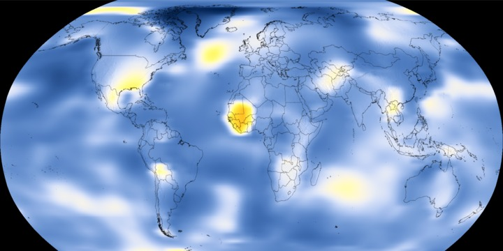
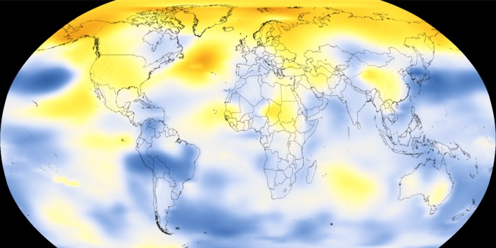
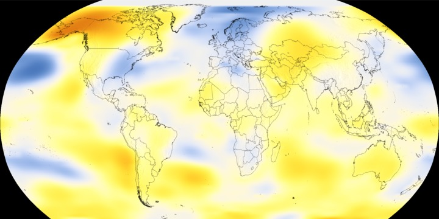
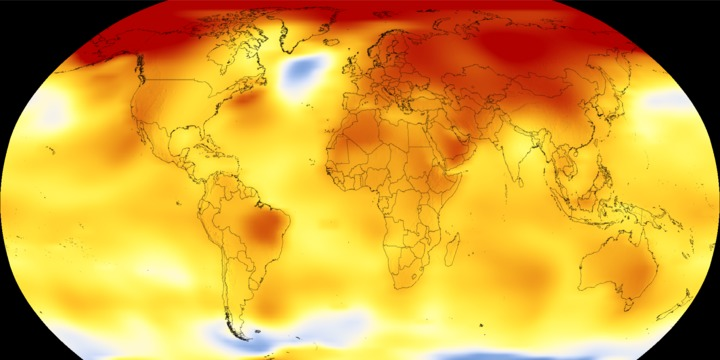

The average daily temperature is all well over 30°C
If this trend continues , we will soon hit 40°C which can cause serious damage to our organs
Fluctuative temperature is also not suitable for human growth
Maybe numbers isn't something that intrigues you
Take a look at these,blue signifies cooler temperature while orange signifies hotter temperature , the color intensity and temperature is directly proportionate
Year 1912

Year 1940

Year 1981

Year 2017

THE CONSEQUENCE
The weather becomes hotter
The ground becomes drier
Crops struggle to grow
Amount of food available decreases
People starve
People fall sick
People die
Humans
.
.
.
EXTINCT
we NEED to do something about this.
If this trend continues , there is NO DOUBT that planet earth will be destroyed and humans would ceased to exist